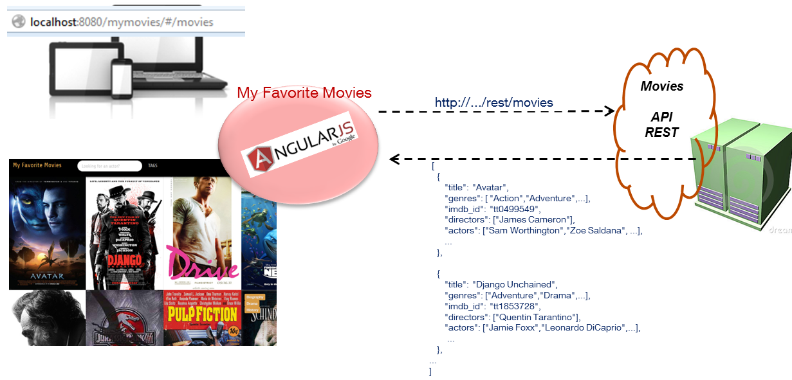
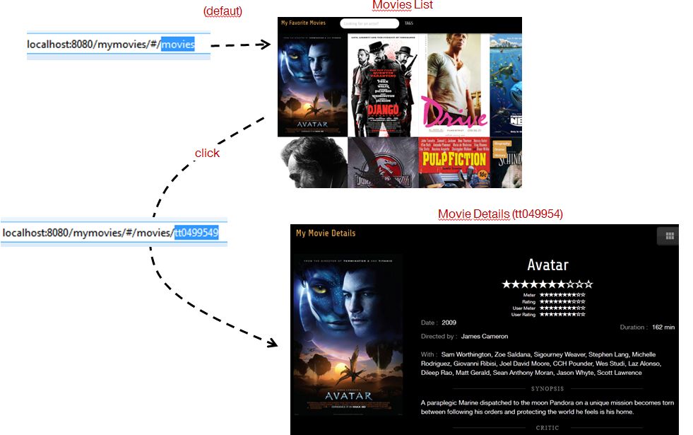
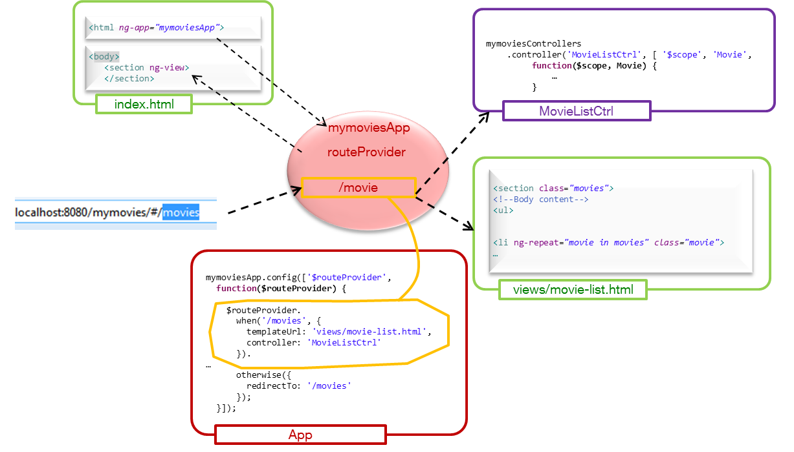

AngularJS
Atelier - Developer Day 2013
Animé et crée par Alexis Chemin et Ludovic MeurillonQuelques explications
AngularJS
framework JavaScript visant à faciliter le développement d’IHM Web « Mono-page » coté navigateur. Il s’appuie sur le pattern MVC qui consiste à établir une séparation nette entre les données (Modèle, nommé « Scope » avec AngularJS), leurs représentations (Vues : le HTML) et la logique de l’IHM (Contrôle)
Les Concepts
- Modularisation : découpage de l’application en modules, liés par le framework via un mécanisme d’injection de dépendences
- Data-binding : liaison de données bidirectionnelle qui permet de lier les modifications apportées aux propriétés d’un objet à des changements dans l’interface utilisateur, et vice-versa
- Routage : associer un nom de route à un couple (Vue , Contrôleur) et permettre la navigation via ces routes
- Filtrage : adapter les données avant l’affichage ou filtrer le contenu d’une collection
- Directive : permet d’étendre le code HTML en déclarant des éléments propre à notre application (composants réutilisables)
ng-app
<html ng-app="module">data-biding
The bad way

data-biding
The good way

data-biding
The bad way
data-biding
The good way
$scope
$scope.model="value"$scope.validate = function(...)
$injection
module.config(['$routeProvider',...
My Favorite Movies
A partir d'un service REST exposant des données concernant des films, une IHM Web présente un mur d’affiches de films et les informations qui s’y rattachent.
Instructions
Dans un terminal :
cd mymovies/
karma start karma.conf.js
A chaque étape
-
Ajoutez les tests Karma associés à l'étape
./mymovies/karma.conf.js -
Faites-les passer au vert !!
Les fichiers
-
Javascript :
./mymovies/src/main/webapp/js/*.js -
HTML :
./mymovies/src/main/webapp/views/*.html -
Tests unitaires :
./mymovies/src/test/js/step-*.js
Etape 1
Routes
Actuellement, la vue movie-list.html est affichée lorsqu'on affiche
...#/movies
Ajoutez une route et faites en sorte d'afficher le détail d'un film pour les URL
...#/movies/:movieId
Ce qu'on veut:
Déclarer une route:
Etape 2
Scope
Scope
Les contrôleurs fournissent des fonctions aux vues et mettent à jour le modèle à travers le $scope
Modifiez le contrôleur MovieListCtrl pour faire passer les tests au vert
Etape 3
Filter
Filter
Les filtres peuvent être attachés à un module ou un contrôleur
Créez un filtre actorSearch sur le contrôleur MovieListCtrl et faites passer les tests au vert
Etape 4
Directive
Directive
L'objectif de l'exercice est d'implémenter le comportement suivant dans les vues
<vote prefix="note" value="2.5" max="5" stars="10"/>
=
Etape 5
Recherche par tags
Objectif
Activez la fonction de filtre par tag en utilisant/modifiant la vue, les controller et les filtres
Indice : inspirez-vous du filtre searchByActorEtape 6
E2E
Protractor
Protractor est le moteur de test e2e édité par l'équipe Angular.
Lancez un serveur sellenium
mymovies/selenium/start
Puis lancez protractor pour executer les tests
protractor protractor.conf.js